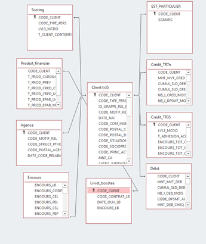

Objectifs de la mission
Lors d'un projet encadrée par l'IUT, la banque populaire Grand-Ouest (BPO) nous a demandé de crée un rapport Power BI sur les clients de la banques susceptible d'apporter de l'argent frais. C'est à dire des clients possédant de l'argent sur des comptes ou livret externe à la BPO.
Déroulement de la mission
Dans un permiers temps, nous avons traité un fichiers Excel volumineux possédant de nombreux attrivuts (environs 300).
Nous avons aussi passer un certains temps à assimiler tous le nouveau vocabulaire banquaire, ainsi que les noms utilisés
au sein de la banque.
Puis, nous avons dressé une liste d'inidcateurs à calculé qui nous semblais pertinant avant de les calculé sous Excel ou sous
le langage de programmation R pour les plus complexes. Nous avons vérifié la pertinence de ces indicateurs avant de les
filtrer par catégorie pour mieux les répartir lors de la construction du PBI.
De plus, pour nous repérer lors de la mise en place d'indicateur, dû au nombre important d'attributs, nous avons mis en place une base de données ACCESS pour mieux visualiser le tout.
Lors de la construction du power BI, nous avons répartis notre analyse en plusieurs pages. Une première contenant les informations
les plus générales, puis plus les pages avancaient, plus les information était sur des sujets précis pour plus de détails.
La dernière page contenant une conclusion des analyses réalisés.
Page d'acceuil du tableau de bord
Modèle de base de données ACCESS
